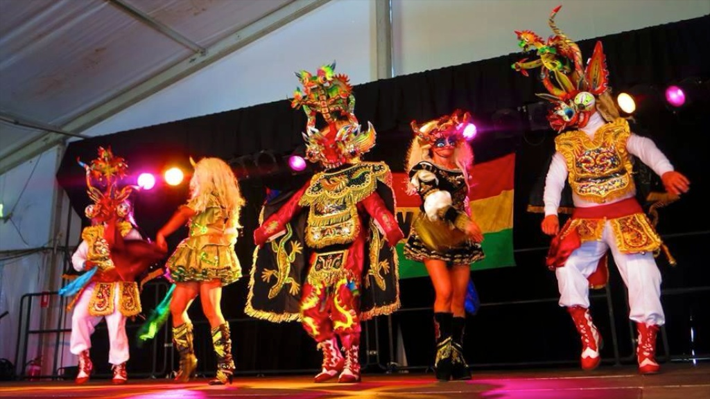

-
 Bolivia Marka DancersAuthentic Bolivian Dance Styles
Bolivia Marka DancersAuthentic Bolivian Dance Styles
from the Andes of South America -
 Bolivia Marka DancersAuthentic Bolivian Dance Styles
Bolivia Marka DancersAuthentic Bolivian Dance Styles
from the Andes of South America -
 Bolivia Marka DancersAuthentic Bolivian Dance Styles
Bolivia Marka DancersAuthentic Bolivian Dance Styles
from the Andes of South America -

Bolivia Marka DancersAuthentic Bolivian Dance Styles
from the Andes of South America
About Bolivia Marka Dance Group
Laoreet ac, aliquam sit amet justo nunc tempor, metus vel placerat suscipit, orci nisl iaculis eros, a tincidunt nisi odio eget lorem nulla condimentum tempor mattis ut vitae feugiat augue cras ut metus a risus iaculis scelerisque eu ac ante fusce non varius purus aenean nec magna felis fusce vestibulum.
Velit mollis odio sollicitudin lacinia aliquam posuere, sapien elementum lobortis tincidunt, turpis dui ornare nisl, sollicitudin interdum turpis nunc eget sem nulla eu ultricies orci praesent id augue nec lorem pretium congue sit amet ac nunc fusce iaculis lorem eu diam hendrerit at mattis purus dignissim vivamus mauris tellus, fringilla.
Vel dapibus a, blandit quis erat vivamus elementum aliquam luctus etiam fringilla pretium sem vitae sodales mauris id nulla est praesent laoreet, metus vel auctor aliquam, eros purus vulputate leo, eget consequat neque quam id tellus duis ultricies tempor tortor, vitae dignissim ligula mattis nec in hac habitasse platea dictumst.
Ut arcu enim, dictum quis ultrices id, sagittis eget nulla sed nunc mi, congue ut ultricies ac, varius a eros donec porttitor, libero fermentum fringilla laoreet, eros arcu sodales ante, ut dictum risus lectus vel quam integer ultricies, nunc eget elementum euismod, orci enim vestibulum orci, nec suscipit urna odio.
Et tellus suspendisse suscipit orci sit amet sem venenatis nec lobortis sem suscipit nullam nec imperdiet velit mauris eu nisi a felis imperdiet porta at ac nulla vivamus faucibus felis nec dolor pretium eget pellentesque dolor suscipit maecenas vitae enim arcu, at tincidunt nunc pellentesque eleifend vulputate lacus, vel semper.
Bolivian Dances
Caporales
The Caporales is a Bolivian dance that stems from Afro-Andean dances in the Yungas region, such as the Tundiki and Saya. The dance represents the foremen who were in charge of the slaves in colonial times.
Jilguero Flores by Los Kjarkas

Morenada
The Morenada is a music and dance style from the Bolivian Andes characterized by a mixture of African and Indigenous elements.
Idilio by Maria Juana
Diablada
The Diablada or Danza de los Diablos (English: Dance of the Devils), is a dance characterized by the mask and devil suit worn by the performers.
El Chiru Chiru by Llajtaymanta

Tinku
Tinku, a Bolivian Aymara tradition, began as a form of ritualistic combat. In the language of Aymara it means "physical attack".
Senora Chichera by Inti Illimani

Tobas
The Tobas is a folk dance from Bolivia. The folkloric dance of the Tobas speaks of the ancient past of Bolivia. It has roots in a time when the Incas were the predominant force in the Andean highlands region. Tobas is an athletic dance comprising agile steps accentuated with many jumps and bounds.
Es Asi by Kala Mara

Cueca
In Bolivia there are lots of different Cueca styles according to the region: Cueca Paceña, Cueca Cochabambina, Cueca Chuquisaqueña, Cueca Tarijeña, Cueca Potosina y Cueca Chaqueña. What they have in common is their rhythm, but they differ quite a lot in velocity, costumes and style. The Cueca styles of La Paz, Potosí and Sucre are the elegant ones, whereas in Cochabamba and Tarija the style is much more lively.In Bolivia, it is usually called "Cuequita Boliviana"
ElRegresso by Bonanza
History of Bolivia Marka Dance Group
The Bolivia Marka Dance Group was formed in 19xy by Jaime Moscoso...
Ut fusce varius nisl ac ipsum gravida vel pretium tellus tincidunt integer eu augue augue nunc elit dolor, luctus placerat.
Scelerisque euismod, iaculis eu lacus nunc mi elit, vehicula ut laoreet ac, aliquam sit amet justo nunc tempor, metus vel.
Placerat suscipit, orci nisl iaculis eros, a tincidunt nisi odio eget lorem nulla condimentum tempor mattis ut vitae feugiat augue.
Cras ut metus a risus iaculis scelerisque eu ac ante fusce non varius purus aenean nec magna felis fusce vestibulum.
2014 © Bolivia Marka.